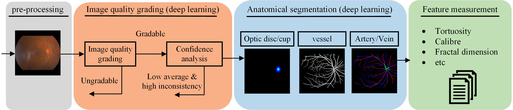
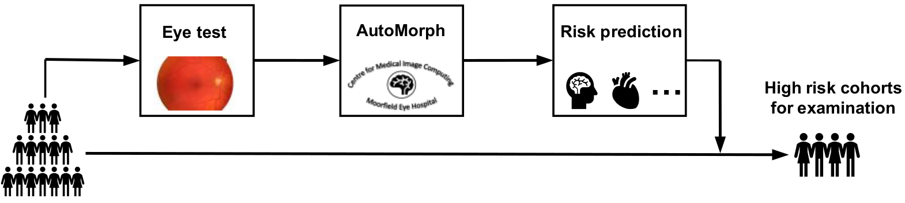

AutoMorph includes four modules, the retinal image preprocessing, image quality grading, anatomical segmentation (vessel, artery/vein, optic disc/cup), and clinically-relevant feature measurement. AutoMorph can be applied for data curation, segmentation task, and clinical correlation research, such as ’oculomics'. AutoMorph has been externally validated on public datasets and now deployed in large-scale clinical research with UK BioBank and AlzEye.


Three options to run AutoMorph:
More details can be referred to Github page.
Being involved in AutoMorph from any of following points:
An accepted pull request on Github can automatically join as a co-contributor!
Potential collaboration is warmly welcomed. It includes but not limited to AutoMorph deployment, cross validation, and technique upgrade. Please contact with the senior authors or first author.
This work is supported by EPSRC grants EP/M020533/1 EP/R014019/1 and EP/V034537/1 as well as the NIHR UCLH Biomedical Research Centre. Dr Wagner is funded through an MRC Clinical Research Training Fellowship (MR/TR000953/1). Dr Keane is supported by a Moorfields Eye Charity Career Development Award (R190028A) and a UK Research & Innovation Future Leaders Fellowship (MR/T019050/1). Dr. Keane has acted as a consultant for DeepMind, Roche, Novartis, Apellis, and BitFount and is an equity owner in Big Picture Medical. He has received speaker fees from Heidelberg Engineering, Topcon, Allergan, and Bayer.
Zhou, Yukun, Siegfried Wagner, Mark Chia, An Zhao, Peter Woodward-Court, Moucheng Xu, Robbert Struyven, Daniel Alexander, and Pearse Keane. "AutoMorph: Automated Retinal Vascular Morphology Quantification via a Deep Learning Pipeline." medRxiv (2022).